1 关键字与标识符
1.1 关键字
定义：被Java语言赋予了特殊含义，用做专门用途的字符串（单词）
特点：关键字中所字母都为小写
具体哪些关键字：
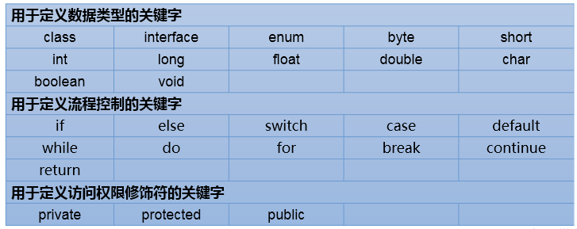
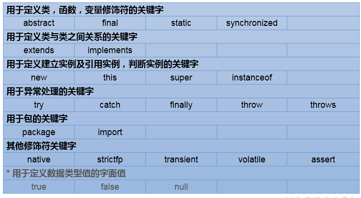
1.2 保留字
定义：现Java版本尚未使用，但以后版本可能会作为关键字使用。
具体哪些保留字：goto 、const
注意：自己命名标识符时要避免使用这些保留字
1.3 标识符
定义：凡是自己可以起名字的地方都叫标识符。
涉及到的结构：包名、类名、接口名、变量名、方法名、常量名
规则：必须要遵守。否则，编译不通过
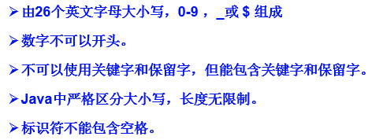
规范：可以不遵守，不影响编译和运行。但是要求大家遵守。
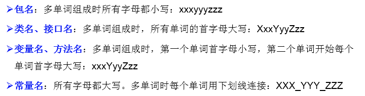
注意点： 在起名字时，为了提高阅读性，要尽量意义，“见名知意”。
2 变量
2.1 变量的分类
按数据类型分类：
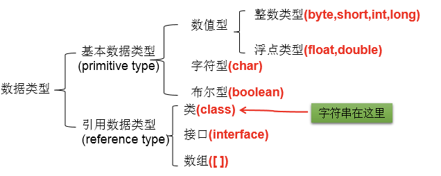
详细说明：
整型：byte(1字节=8bit) \ short(2字节) \ int(4字节) \ long(8字节)
- byte范围：-128 ~ 127
- 声明long型变量，必须以”l”或”L”结尾
- 通常，定义整型变量时，使用int型。
- 整型的常量，默认类型是：int型
浮点型：float(4字节) \ double(8字节)
- 浮点型，表示带小数点的数值
- float表示数值的范围比long还大
- 定义float类型变量时，变量要以”f”或”F”结尾
- 通常，定义浮点型变量时，使用double型
- 浮点型的常量，默认类型为：double
字符型：char (1字符=2字节)
- 定义char型变量，通常使用一对’’,内部只能写一个字符
- 表示方式：1.声明一个字符 2.转义字符 3.直接使用 Unicode 值来表示字符型常量
布尔型：boolean
- 只能取两个值之一：true 、 false
- 常常在条件判断、循环结构中使用
按声明的位置分类：
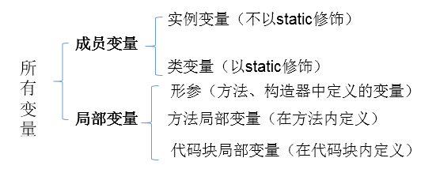
2.2 定义变量的格式
数据类型 变量名 = 变量值;
或
数据类型 变量名;
变量名 = 变量值;
2.3 变量使用的注意点
- 变量必须先声明，后使用
- 变量都定义在其作用域内。在作用域内，它是有效的。换句话说，出了作用域，就失效了
- 同一个作用域内，不可以声明两个同名的变量
2.4 基本数据类型变量间运算规则
涉及到的基本数据类型：除了boolean之外的其他7种
自动类型转换(只涉及7种基本数据类型）：
结论：当容量小的数据类型的变量与容量大的数据类型的变量做运算时，结果自动提升为容量大的数据类型。
- byte 、char 、short –> int –> long –> float –> double
- 特别的：当byte、char、short三种类型的变量做运算时，结果为int型
说明：此时的容量大小指的是，表示数的范围的大和小。比如：float容量要大于long的容量
强制类型转换(只涉及7种基本数据类型）：自动类型提升运算的逆运算。
- 需要使用强转符：()
- 注意点：强制类型转换，可能导致精度损失。
2.5 String与8种基本数据类型间的运算
- String属于引用数据类型,翻译为：字符串
- 声明String类型变量时，使用一对””
- String可以和8种基本数据类型变量做运算，且运算只能是连接运算：+
- 运算的结果仍然是String类型
避免：
String s = 123;//编译错误
String s1 = "123";
int i = (int)s1;//编译错误3 进制
3.1 编程中涉及的进制及表示方式：
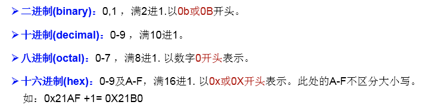
3.2 二进制的使用说明：
计算机底层的存储方式：所有数字在计算机底层都以二进制形式存在。
二进制数据的存储方式：所有的数值，不管正负，底层都以补码的方式存储。
3.3 原码、反码、补码的说明：
正数：三码合一
负数：
3.4 进制间的转换：
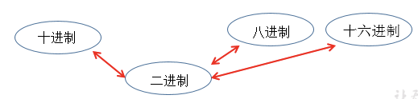
图示二进制转换为十进制：
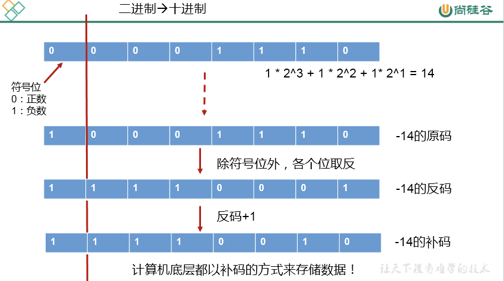
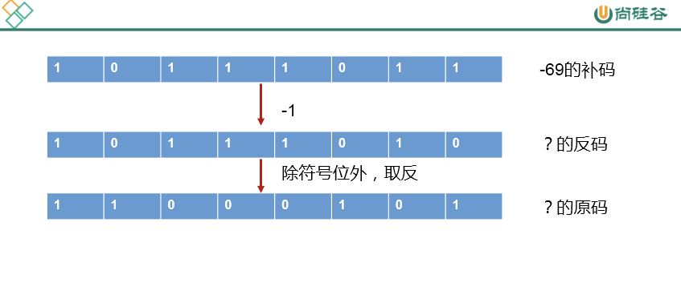
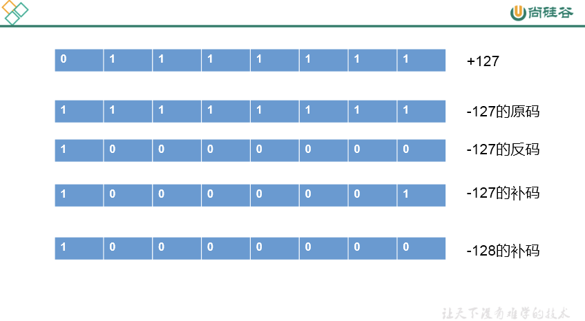
图示十进制转换为二进制：
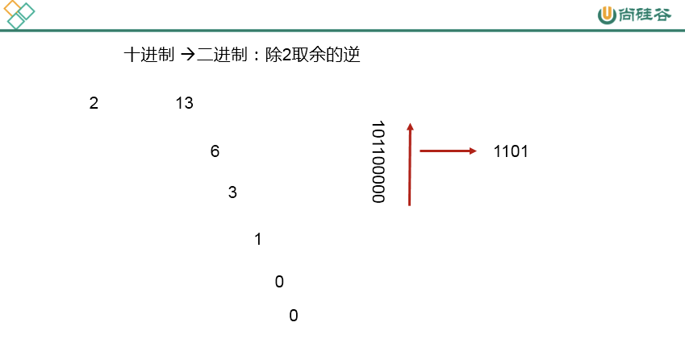
二进制与八进制、十六进制间的转换：
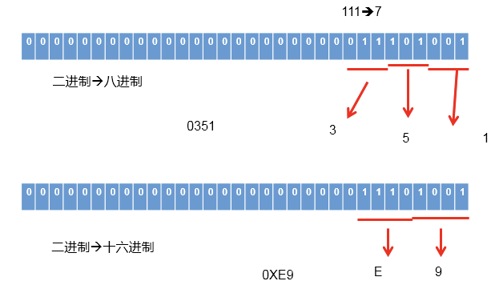
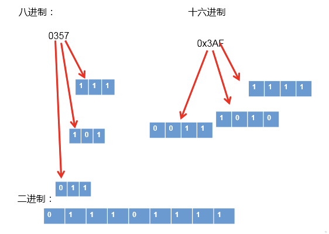
4 运算符
4.1 算数运算符
+ - + - * / % (前)++ (后)++ (前)-- (后)-- +
【典型代码】
//除号：/
int num1 = 12;
int num2 = 5;
int result1 = num1 / num2;
System.out.println(result1);//2
// %:取余运算
//结果的符号与被模数的符号相同
//开发中，经常使用%来判断能否被除尽的情况。
int m1 = 12;
int n1 = 5;
System.out.println("m1 % n1 = " + m1 % n1);
int m2 = -12;
int n2 = 5;
System.out.println("m2 % n2 = " + m2 % n2);
int m3 = 12;
int n3 = -5;
System.out.println("m3 % n3 = " + m3 % n3);
int m4 = -12;
int n4 = -5;
System.out.println("m4 % n4 = " + m4 % n4);
//(前)++ :先自增1，后运算
//(后)++ :先运算，后自增1
int a1 = 10;
int b1 = ++a1;
System.out.println("a1 = " + a1 + ",b1 = " + b1);
int a2 = 10;
int b2 = a2++;
System.out.println("a2 = " + a2 + ",b2 = " + b2);
int a3 = 10;
++a3;//a3++;
int b3 = a3;
//(前)-- :先自减1，后运算
//(后)-- :先运算，后自减1
int a4 = 10;
int b4 = a4--;//int b4 = --a4;
System.out.println("a4 = " + a4 + ",b4 = " + b4);【特别说明的】
- (前)++ :先自增1，后运算；(后)++ :先运算，后自增1
- (前)– :先自减1，后运算；(后)– :先运算，后自减1
- 连接符
+：只能使用在String与其他数据类型变量之间使用。
4.2 赋值运算符
= += -= *= /= %=
【典型代码】
int i2,j2;
//连续赋值
i2 = j2 = 10;
//***************
int i3 = 10,j3 = 20;
int num1 = 10;
num1 += 2;//num1 = num1 + 2;
System.out.println(num1);//12
int num2 = 12;
num2 %= 5;//num2 = num2 % 5;
System.out.println(num2);
short s1 = 10;
//s1 = s1 + 2;//编译失败
s1 += 2;//结论：不会改变变量本身的数据类型
System.out.println(s1);【特别说明的】
- 运算的结果不会改变变量本身的数据类型
- 开发中，如果希望变量实现+2的操作，有几种方法？(前提：int num = 10;)
- 方式一：num = num + 2;
- 方式二：num += 2; (推荐)
- 开发中，如果希望变量实现+1的操作，有几种方法？(前提：int num = 10;)
- 方式一：num = num + 1;
- 方式二：num += 1;
- 方式三：num++; (推荐)
4.3 比较运算符
== != > < >= <= instanceof
【典型代码】
int i = 10;
int j = 20;
System.out.println(i == j);//false
System.out.println(i = j);//20
boolean b1 = true;
boolean b2 = false;
System.out.println(b2 == b1);//false
System.out.println(b2 = b1);//true【特别说明的】
- 比较运算符的结果是boolean类型
> < >= <=：只能使用在数值类型的数据之间。==和!=：不仅可以使用在数值类型数据之间，还可以使用在其他引用类型变量之间。
Account acct1 = new Account(1000);
Account acct2 = new Account(1000);
boolean b1 = (acct1 == acct2);//比较两个Account是否是同一个账户。
boolean b2 = (acct1 != acct2);//4.4 逻辑运算符
& && | || ! ^
【典型代码】
//区分& 与 &&
//相同点1：& 与 && 的运算结果相同
//相同点2：当符号左边是true时，二者都会执行符号右边的运算
//不同点：当符号左边是false时，&继续执行符号右边的运算。&&不再执行符号右边的运算。
//开发中，推荐使用&&
boolean b1 = true;
b1 = false;
int num1 = 10;
if(b1 & (num1++ > 0)){
System.out.println("我现在在北京");
}else{
System.out.println("我现在在南京");
}
System.out.println("num1 = " + num1);
boolean b2 = true;
b2 = false;
int num2 = 10;
if(b2 && (num2++ > 0)){
System.out.println("我现在在北京");
}else{
System.out.println("我现在在南京");
}
System.out.println("num2 = " + num2);
//区分：| 与 ||
//相同点1：| 与 || 的运算结果相同
//相同点2：当符号左边是false时，二者都会执行符号右边的运算
//不同点3：当符号左边是true时，|继续执行符号右边的运算，而||不再执行符号右边的运算
//开发中，推荐使用||
boolean b3 = false;
b3 = true;
int num3 = 10;
if(b3 | (num3++ > 0)){
System.out.println("我现在在北京");
}else{
System.out.println("我现在在南京");
}
System.out.println("num3 = " + num3);
boolean b4 = false;
b4 = true;
int num4 = 10;
if(b4 || (num4++ > 0)){
System.out.println("我现在在北京");
}else{
System.out.println("我现在在南京");
}
System.out.println("num4 = " + num4);【特别说明的】
逻辑运算符操作的都是boolean类型的变量。而且结果也是boolean类型
4.5 位运算符：
<< >> >>> & | ^ ~
【典型代码】
int i = 21;
i = -21;
System.out.println("i << 2 :" + (i << 2));
System.out.println("i << 3 :" + (i << 3));
System.out.println("i << 27 :" + (i << 27));
int m = 12;
int n = 5;
System.out.println("m & n :" + (m & n));
System.out.println("m | n :" + (m | n));
System.out.println("m ^ n :" + (m ^ n));【面试题】 你能否写出最高效的2 * 8的实现方式？
答案：2 << 3 或 8 << 1
【特别说明的】
- 位运算符操作的都是整型的数据
<<：在一定范围内，每向左移1位，相当于 * 2>>:在一定范围内，每向右移1位，相当于 / 2
典型题目：
- 交换两个变量的值。
- 实现60的二进制到十六进制的转换
4.6 三元运算符：
(条件表达式)? 表达式1 : 表达式2
【典型代码】
- 获取两个整数的较大值
- 获取三个数的最大值
【特别说明的】
- 说明
- 条件表达式的结果为boolean类型
- 根据条件表达式真或假，决定执行表达式1，还是表达式2：
- 如果表达式为true，则执行表达式1
- 如果表达式为false，则执行表达式2
- 表达式1 和表达式2要求是一致的。
- 三元运算符可以嵌套使用
- 凡是可以使用三元运算符的地方，都可以改写为if-else。反之，不成立。
- 如果程序既可以使用三元运算符，又可以使用if-else结构，那么优先选择三元运算符。原因：简洁、执行效率高。
5 流程控制
5.1 分支结构
5.1.1 if-else条件判断结构：
// 结构一：
if(条件表达式){
执行表达式
}
// 结构二：二选一
if(条件表达式){
执行表达式1
}else{
执行表达式2
}
// 结构三：n选一
if(条件表达式){
执行表达式1
}else if(条件表达式){
执行表达式2
}else if(条件表达式){
执行表达式3
}
...
else{
执行表达式n
}说明：
- else 结构是可选的。
- 针对于条件表达式：
- 如果多个条件表达式之间是“互斥”关系(或没有交集的关系),哪个判断和执行语句声明在上面还是下面，无所谓。
- 如果多个条件表达式之间有交集的关系，需要根据实际情况，考虑清楚应该将哪个结构声明在上面。
- 如果多个条件表达式之间有包含的关系，通常情况下，需要将范围小的声明在范围大的上面。否则，范围小的就没机会执行了。
- if-else结构是可以相互嵌套的。
- 如果if-else结构中的执行语句只有一行时，对应的一对{}可以省略的。但是，不建议大家省略。
5.1.2 switch-case选择结构
switch(表达式){
case 常量1:
执行语句1;
//break;
case 常量2:
执行语句2;
//break;
...
default:
执行语句n;
//break;
}说明：
- 根据switch表达式中的值，依次匹配各个case中的常量。一旦匹配成功，则进入相应case结构中，调用其执行语句。当调用完执行语句以后，则仍然继续向下执行其他case结构中的执行语句，直到遇到break关键字或此switch-case结构末尾结束为止。
- break,可以使用在switch-case结构中，表示一旦执行到此关键字，就跳出switch-case结构
- switch结构中的表达式，只能是如下的6种数据类型之一：byte 、short、char、int、枚举类型(JDK5.0新增)、String类型(JDK7.0新增)
- case 之后只能声明常量。不能声明范围。
- break关键字是可选的。
- default:相当于if-else结构中的else。default结构是可选的，而且位置是灵活的。
- 如果switch-case结构中的多个case的执行语句相同，则可以考虑进行合并。
- break在switch-case中是可选的
5.2 循环结构
循环结构的四要素：
- 初始化条件
- 循环条件 —>是boolean类型
- 循环体
- 迭代条件
说明：通常情况下，循环结束都是因为②中循环条件返回false了。
5.2.1 for循环结构
for(①;②;④){
③
}执行过程：① - ② - ③ - ④ - ② - ③ - ④ - … - ②
5.2.2 while循环结构
①
while(②){
③;
④;
}执行过程：① - ② - ③ - ④ - ② - ③ - ④ - … - ②
说明：写while循环千万小心不要丢了迭代条件。一旦丢了，就可能导致死循环！
for和while循环总结：
- 开发中，基本上我们都会从for、while中进行选择，实现循环结构。
- for循环和while循环是可以相互转换的！
- 区别：for循环和while循环的初始化条件部分的作用范围不同。
- 我们写程序，要避免出现死循环。
5.2.3 do-while循环结构
①
do{
③;
④;
}while(②);执行过程：① - ③ - ④ - ② - ③ - ④ - … - ②
说明：
- do-while循环至少会执行一次循环体！
- 开发中，使用for和while更多一些。较少使用do-while
5.2.4 “无限循环”结构
while(true)或 for(;;)
总结：如何结束一个循环结构？
- 方式一：当循环条件是false时
- 方式二：在循环体中，执行break
5.2.5 嵌套循环
嵌套循环：将一个循环结构A声明在另一个循环结构B的循环体中,就构成了嵌套循环
- 内层循环：循环结构A
- 外层循环：循环结构B
说明：
- 内层循环结构遍历一遍，只相当于外层循环循环体执行了一次
- 假设外层循环需要执行m次，内层循环需要执行n次。此时内层循环的循环体一共执行了m * n次
- 外层循环控制行数，内层循环控制列数
【典型练习】
//练习一：
/*
******
******
******
******
*/
for(int j = 1;j <= 4;j++ ){
for(int i = 1;i <= 6;i++){
System.out.print('*');
}
System.out.println();
}
//练习二：
/* i(行号) j(*的个数)
* 1 1
** 2 2
*** 3 3
**** 4 4
***** 5 5
*/
for(int i = 1;i <= 5;i++){//控制行数
for(int j = 1;j <= i;j++){//控制列数
System.out.print("*");
}
System.out.println();
}
//练习三：九九乘法表
//练习四：100以内的质数补充：衡量一个功能代码的优劣：
- 正确性
- 可读性
- 健壮性
- 高效率与低存储：时间复杂度 、空间复杂度 （衡量算法的好坏）
5.3 break和continue关键字的使用
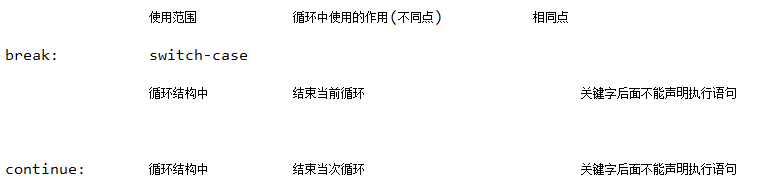
5.4 Scanner类的使用
如何从键盘获取不同类型的变量：需要使用Scanner类
具体实现步骤：
- 导包：import java.util.Scanner;
- Scanner的实例化:Scanner scan = new Scanner(System.in);
- 调用Scanner类的相关方法（next() / nextXxx()），来获取指定类型的变量
注意：
需要根据相应的方法，来输入指定类型的值。如果输入的数据类型与要求的类型不匹配时，会报异常：InputMisMatchException，导致程序终止。
//1.导包：import java.util.Scanner;
import java.util.Scanner;
class ScannerTest{
public static void main(String[] args){
//2.Scanner的实例化
Scanner scan = new Scanner(System.in);
//3.调用Scanner类的相关方法
System.out.println("请输入你的姓名：");
String name = scan.next();
System.out.println(name);
System.out.println("请输入你的芳龄：");
int age = scan.nextInt();
System.out.println(age);
System.out.println("请输入你的体重：");
double weight = scan.nextDouble();
System.out.println(weight);
System.out.println("你是否相中我了呢？(true/false)");
boolean isLove = scan.nextBoolean();
System.out.println(isLove);
//对于char型的获取，Scanner没有提供相关的方法。只能获取一个字符串
System.out.println("请输入你的性别：(男/女)");
String gender = scan.next();//"男"
char genderChar = gender.charAt(0);//获取索引为0位置上的字符
System.out.println(genderChar);
}
}